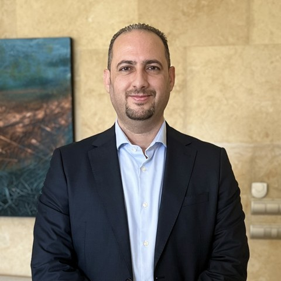

Global SaaS share
#1
1
Led the regional sales engineering function behind Infobip’s region reaching #1 globally in SaaS share of business and its top tier for SaaS and year-over-year growth.

Technology and commercial executive with 23+ years across KSA, the GCC and MENA, turning AI, SaaS and cloud platforms into enterprise growth through GTM strategy, revenue operations, presales and strategic partnerships.
Led the regional sales engineering function behind Infobip’s region reaching #1 globally in SaaS share of business and its top tier for SaaS and year-over-year growth.
Developed AI automation and omnichannel use cases at Infobip, delivering up to 70% efficiency gains.
Pioneered the go-to-market launch of CEQUENS’ first model-agnostic agentic AI platform, from positioning to pilot and enablement. Read the story →
Redesigned regional solution engagement and GTM practices, cutting sales cycles by 30%.
Led improvements to the SDR operating model, achieving a 50% increase in outbound-to-qualified-meeting conversion efficiency.
Led five commercial functions at CEQUENS and regional teams of up to 15 professionals across 12 countries at Infobip.
Select a company to jump to it. The line fills as you scroll through each role.
Lead enterprise sales and GTM with direct accountability for commercial targets and sales execution.
Led commercial enablement and customer solutions across RevOps, Presales & Solutions, Professional Services, Sales Enablement and Partnerships. Managed up to 14 professionals.
Led global presales, solution delivery and customer experience consulting, moving solution engagements toward enterprise AI and SaaS business outcomes.
Directed regional sales engineering and solution consulting across 12 countries, leading teams of up to 15 professionals.
A model-agnostic platform for building automation flows in which AI agents act inside enterprise systems as well as customer-facing channels. Each step in a flow could use a different language model, chosen for the task.
I build and run the engines that help customer-facing teams win: sales engineering, solutions, delivery, enablement, partnerships and revenue operations. Five stages work with customers; two run inside the organization to keep them ready and on track. Select a stage to see how it works.
Industry use cases and demo assets built with my teams, followed by tools and process designs. Select an image to enlarge it.
Omnichannel chatbot and automation journeys across WhatsApp, SMS, voice and web, built as demo assets for regional sales engineering.
Model-agnostic agent flows embedded in enterprise systems as well as customer channels, built as demos and pilots for the platform's go-to-market.
A cross-functional process redesigned at Infobip and CEQUENS, connecting Sales, Presales, Professional Services, Customer Success and Support from opportunity creation through PoC, pilot, proposal and contract to implementation and handover. Enlarge to see the detailed process map.
An interactive model built live with the customer's own figures. It applies the ad platforms' published benchmarks, shows three cases and when the investment pays back.
Diagnose, then sequence: find the one leaking stage in the funnel, then sequence quick wins, bets and new growth toward the target, with every lever's math visible to leadership.
Seven phases that take a new team member from preboarding to owning pipeline, with certified readiness checkpoints that make ramp-up measurable.
Company names, customer names and figures are removed. Model inputs shown are illustrative. Use-case builds and demo assets remain with their companies and can be discussed in conversation.
Talks, broadcast interviews and exhibitions across LEAP, Seamless and regional technology events, on generative AI, customer experience and omnichannel engagement.
Stage 2, Embedded & Open Area / Identity Tech Conference. Presented as Director of Presales & Customer Solutions, CEQUENS.
How customer engagement moved from the store counter to AI-powered, personalized experiences, and what that means for brands in the Kingdom.
Retail-track session at LEAP as Regional Sales Engineering Manager, Infobip, followed by on-site media interviews.
Broadcast interview on the Arabic news bulletin, recorded at LEAP.
Interview at LEAP 2022 on customer experience and shifts in the market.
Watch interview ↗Customer-centric growth through conversational commerce and omnichannel journeys.
Closed-door discussion with marketing and technology leaders.
Co-exhibiting in the AWS partner area, presenting the AI-powered communications platform with the hyperscaler.
Leading solution demos, customer conversations and partner meetings at the region's major technology events, and on-site engagements with enterprise and government customers such as Saudi Electricity Company.
Open to conversations about leading customer-facing and revenue engines for AI and technology companies: sales engineering, solutions, delivery, enablement and partnerships.
Tamer_m_n@outlook.com+966 50 2423 666+962 79 9060 666